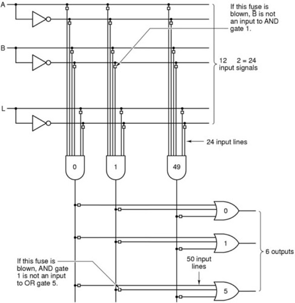
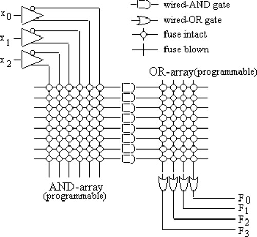
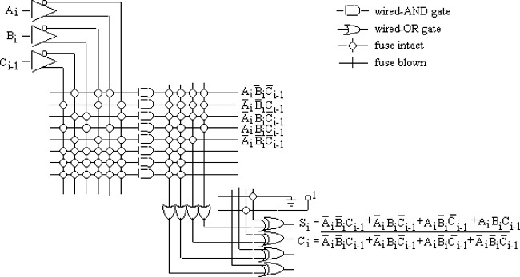

Programmerable
Logic Devices (PLDs)
Motivation
- to
provide the designer of computer systems with a universal logic
device that can be programmed for implementation of any set of logic
functions.
- any
logic function can be represented as some type of SOP form
- SOP
<==> two level AND-OR circuit <==> AND-array and/or OR-array
Many Types of PLDs
More recently,
Programmerable Logic Arrays (PLAs)
Basic Features
- A
PLA consists of a programmable AND-array and a programmable
OR-array.
- n -- number of input lines
- p -- number of
product terms
- m -- number of output
lines
-
The size of any PLA is
measured by n×p×m
-
Commercially
available PLAs typically have 16 inputs, 48 products terms, and 8
outputs, and the outputs may be complemented or uncomplemented.
-
Example: A 12×50×9
PLA
- 12 inputs
- 50 product terms
- 9
outputs

Different Types of PLAs
- mask-programmable
PLA
-- if the
AND-array and the OR-array are programmed by the manufacturer according to
the program table provided by the customer
- field-programmable PLA (FPLA) -- if the AND-array and the
OR-array can be programmed by the user by blowing fusible links or leaving
them intact
Applications
- General-purpose combinational function implementation
- Example: Implement
function
y(s2,s1,s0)= s2's1's0 + s2's1s0' + s2s1's0' + s2s1's0
- Example: A full adder implemented on a PLA
- a PLA without any information written to it

- Implementation
of full adder optimized to a minimum of 3 x 5 x 2 PLA

- Note:
To achieve efficient utilization of the product terms of a PLA, it is
important to optimize the logic design so that the multiple output functions
of the same set of input variables can make use of as many common product
terms as possible.
Read-Only Memory (ROMs)
- actually a combinational circuit!
- a fixed AND-array and a programmerable OR-array
- direct implementation of the truth table of a function
without the need for simplification
- The
user-programmable ROM is known as programmable
ROM (PROM) or erasable PROM
(EPROM)
Programmerable Array Logic (PAL)
- a programmerable AND-array and a fixed OR-array
Back